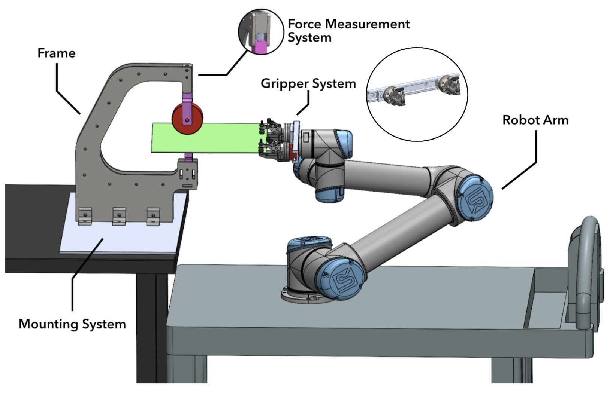
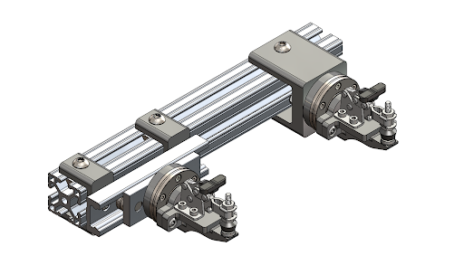
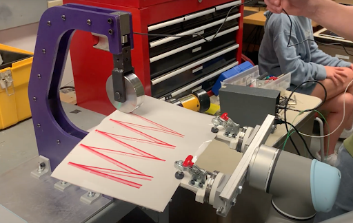

Robotic English Wheeling
Senior capstone project at Northwestern


Areas to Innovate
My senior design project partnered with Northwestern's Advanced Manufacturing Processes Lab (AMPL), where they are trying to fully automate the English wheeling process, an artisan sheet metal forming technique. The goal is an Industry 4.0 manufacturing process that can use AI to generate toolpaths for complex parts.
Our job was to build a destop robotic English wheel system for use in the research of this process. The entire system architecture is seen to the left. The main components were a force measurement decive to report the force that we were placing on the sheet metal, and a gripper which could conform to the deformation being induced in the sheet metal.
The novel gripper is shown to the left. A sliding rail and face-mounted cross roller bearings allow for the clamps to move with the deformed sheet metal.
A presentation of this work was given at ASME 2023 International Manufacturing Science and Engineering Conference, and won 1st place in the student manufacturing design competition.
Specific Tasks
I had two main roles on this project, implement the force measurement system via a load cell and LabView, and to program the cobot's trajectory.
Tests were performed to determine the correct force range of the load cell. I then designed a mount for the load cell that threaded into the frame of the English Wheel. It was calibrated and properly wired it to an amplifier so I could read the force using an niDAQ and LabView.
I learned script code used for the UR5e Cobot from Universal Robots, and used inverse kinematics to program the triangular toolpath trajectory as seen to the right. Check out this video of the robot creating a part!
